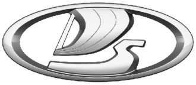

AvtoVAZ (Russian: АвтоВАЗ, IPA: [ɐftoˈvas]) is a Russian automobile manufacturing company owned by the state. It was formerly named as VAZ (Russian: ВАЗ), an acronym for Volga Automotive Plant in Russian (Russian: Во́лжский автомоби́льный заво́д, romanized: Vólzhskiy avtomobíl'nyy zavód).[6] AvtoVAZ is best known for its flagship series of Lada vehicles. In the Soviet Union, its products used various names, including Zhiguli, Oka, and Sputnik, which were phased out in the 1990s and replaced by Lada for the Russian market. From December 2019 to August 2020, AvtoVAZ sold Niva cars with Chevrolet branding. AvtoVAZ was established in 1966 by the Soviet government as a state-run car manufacturer. It was privatized in the 1990s and was a subsidiary of Renault from October 2016 to May 2022. In May 2022, it was re-acquired by the Russian government. The company is indirectly owned by Russian state enterprises through Lada Auto Holding.
The VAZ plant was established in 1966 by the Soviet government in cooperation with the Italian car manufacturer Fiat. Viktor Nikolaevich Polyakov [ru] (later Minister of Automobile Industry) was named as director, and Vladimir Solovyov as chief designer.[7] The plant intended to produce popular economy cars that would meet the growing demand for personal transport.[8] It was built on the banks of the Volga in 1966. A new town, Tolyatti, named after Italian Communist Party leader Palmiro Togliatti, was built around the plant[8] The cost of the VAZ plant was estimated at $800 million in 1970[9] (equivalent to $4.2 billion in 2020).[10] The cars to be produced (designated as "Zhiguli") was envisaged as a "people's car" like the Citroën 2CV or the VW Type 1. Production was intended to be 220,000 units a year, beginning in 1971[11] (other sources listed 300,000 in 1971[9]); car production actually began before the plant was finished in 1970.[11] The VAZ trademark, at first, was a silver Volga boat on a red pentagonal background, with "Togliatti" superimposed in Cyrillic (Тольятти); the first badges, manufactured in Turin, mistakenly had the Cyrillic "Я" rendered "R", instead (Тольʀтти), making them collector's items.[12] The company was not as vertically integrated as other Soviet enterprises; for example, it purchased components from a variety of suppliers over which it exerted little control;[13] in the early years of the company certain parts and subassemblies were imported from Fiat's suppliers in Italy until they could be locally sourced.
The first VAZ-2101 was produced on 22 April 1970, the 100th anniversary of Lenin's birth.[14] About 22,000 VAZ-2101s were built in 1970, with capacity at the end of 1973 reaching 660,000 a year; 21 December, the one-millionth 2101 was built.[11] A third production line was added in October 1974, boosting output to 2,230 cars a day.[11] The same year, total VAZ production reached 1.5 million.[11] The VAZ plant was described as "ultra-modern" by the Chicago Tribune in a 1973 article.[15] Production reached 750,000 cars a year in 1975, making the Tolyatti plant the third-most productive in the world.[16] Between 1977 and 1981, AvtoVAZ acquired 30 welding robots from Japanese firms.[17] In 1974, VAZ was given permission to begin producing Wankel engines under licence from NSU.[18] Work began in 1976, with a single-rotor Lada appearing in 1978; the first 250 of these went on sale in the summer of 1980.[18] After having built a number of prototypes and experimental vehicles, AvtoVAZ designers launched the first car entirely of their own design, the VAZ-2121 Niva, in 1977. This highly popular and innovative[19] sport utility vehicle (SUV) was made with off-road use in mind, featuring a gearbox with a central differential lock lever, as well as a low- and high-range selector lever. The VAZ-2105, based on the Fiat 124 mechanicals, but modernised and restyled, was introduced in 1979 and marketed outside the Soviet Union under the Riva or Laika trade names, depending on the country. Square headlights and new body panels distinguish this car from the earlier models. The 2105 was third-best selling automobile platform after the Volkswagen Beetle and the Ford Model T,[20][21] and one of the longest production run platforms alongside the Volkswagen Beetle, the Hindustan Ambassador, and the Volkswagen Type 2.[22]
